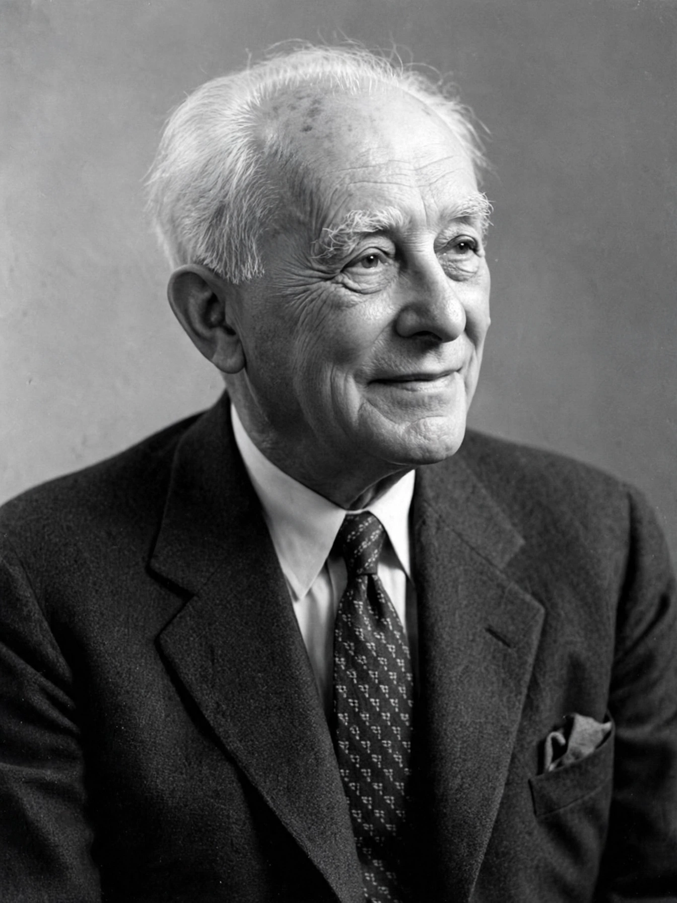

Max Born
| Born | 11 December 1882, Breslau, Germany (now Wrocław, Poland) |
|---|---|
| Died | 5 January 1970 (aged 87), Göttingen, West Germany |
| Known for | Statistical interpretation of the Wave function; Matrix mechanics |
| Awards | Nobel Prize in Physics (1954) |

[Image: Photograph of Max Born in later life, a white-haired man with a gentle expression]Max Born (11 December 1882 – 5 January 1970) was a German-British theoretical physicist who was instrumental in the development of quantum mechanics. In 1926 he proposed the statistical interpretation of the Wave function — the Born rule: |ψ|² gives the probability of a measurement outcome — recognised belatedly by the 1954 Nobel Prize in Physics (shared with Walther Bothe).
At Göttingen, Born built the school that created quantum mechanics: Werner Heisenberg was his assistant, and Born recognised Heisenberg's 1925 multiplication rule as matrix algebra, co-authoring Matrix mechanics. His students and assistants included Pauli, Oppenheimer, Fermi, Wigner, von Neumann and Jordan — arguably the most fertile mentorship in physics history. Forced out by the Nazis in 1933 (he was of Jewish descent), he rebuilt his life at Edinburgh, wrote the classic Atomic Physics and Optics, and campaigned against nuclear weapons (the Russell–Einstein Manifesto, 1955, which he signed). The delay of his Nobel — 28 years after the Born rule — is often cited as the prize's slowest justice.
The Born rule
Reading Schrödinger's wave mechanics, Born saw that the wave could not be a physical wave of matter (it lives in configuration space) but must guide statistics: its squared modulus is the probability density for finding the particle. Einstein's 'God does not play dice' was a reply to Born personally — Born answered that 'our opinions may differ, but I am convinced...' — and the ensuing decades have entirely vindicated Born's reading of the mathematics, whatever one's interpretation of its meaning.